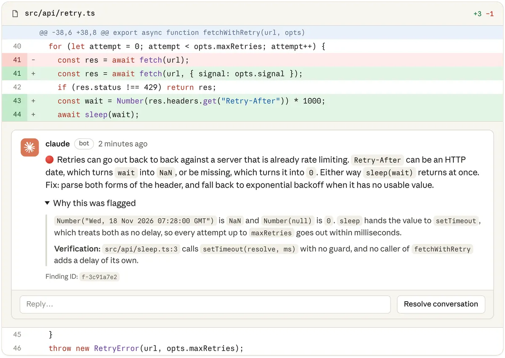
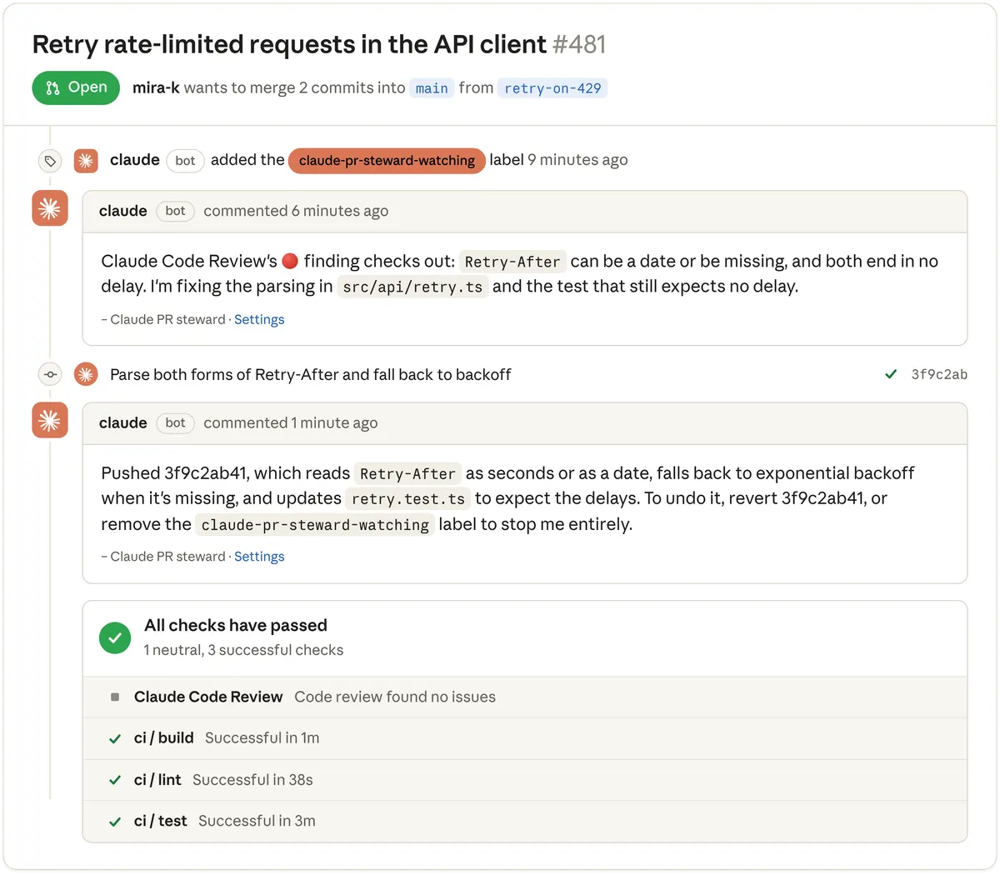

PR 之後也交給代理：審查、修復、核准拆成三層
導讀原文：Anthropic 發表 Claude Ship 測試版，把 PR 的審查、修復與核准拆成三個代理元件
Anthropic 把 PR 開啟之後的三件事拆開：找問題、修到綠、決定能不能合併，分別交給三個代理，核准權獨立於修碼權之外。
原本的節奏是：送出 PR、去做下一件事、被 review 打回來、回頭改、再等一次、最後找人核准。
團隊想保留人工核准，是因為程式每行都由人寫時還跟得上；但當程式大多由代理寫成，這個假設就鬆動了。
Claude Ship 的答案不是做一個全能代理，而是把責任切給三個元件，各自有明確的「不做」。
從權限看，三者的界線很清楚：Code Review 只能留言，PR Steward 能推 commit，只有 Claude Approvals 能給核准。
| 元件 | 負責 | 明確不做 | 狀態 |
|---|---|---|---|
| Code Review | 多角度審查、對抗式驗證發現、貼回 PR；可選 Quick／Standard／Deep | 不改程式 | GA |
| PR Steward | 處理 CI 失敗、合併衝突與審查意見，每次推送留言說明改了什麼、如何還原 | 不核准、不合併 | beta |
| Claude Approvals | 依 repo 裡的政策檔判定能否自行核准，或要求人工簽核 | 不主動改碼 | beta |
政策檔寫在 repo 的預設分支上，官方形容它像「更聰明的 CODEOWNERS」。
Claude Code 團隊自己就是重度使用者——Claude 寫了他們多數的程式碼，這也是他們想做 Claude Ship 的起點。
核准者可以把 Code Review 的發現、甚至團隊自己的分類器，都當成判定訊號。
政策檔放在版本控制裡，核准與否的規則因此可被審計、也可回滾。
看得到的三件事：問題、修復、判定
官方釋出的操作畫面，剛好對應三個元件的產出。
Code Review 的發現會先經過對抗式驗證與分類，才貼回 PR。

PR Steward 進場後，處理的是「怎麼讓它變綠」，而不是「它該不該合併」。

一輪 PR 的交接長什麼樣
開發者在 Claude Code 裡打 /ship，之後的球就在幾個代理之間傳。
- 01開發者 → Claude Code送出 /ship：推送、開 PR
- 02Code Review → PR貼上分類後的發現與嚴重度
- 03PR Steward → 分支修 CI、解衝突、回應審查意見並留言
- 04Claude Approvals → 分支保護依政策檔給綠燈，或要求人工簽核
- 04b旁支：人 → 合併政策要求簽核、或權限不足時由人接手
本站重繪，非原文圖；原文以段落分別描述三個元件，未畫出交接順序。實際可合併範圍仍受開發者權限與分支規則限制。
管理員逐 repo 開啟，選審查等級、設定執行時機與花費上限，既有的必要檢查與分支保護照用。
對產品經理這類非工程角色差別最明顯：讀到客戶回饋、和 Claude 討論後開一個 PR，就能去做下一件事。
官方建議先讓核准政策跑觀察模式，確認判定合理後，再讓分支保護要求它的綠燈。
成本按 token 計，取決於 PR 數量與大小、審查等級、執行頻率，以及 PR Steward 實際做多少事。
官方也承認這會增加支出，但把上限交給管理員設定，而不是寫死在方案裡。
想試的團隊可以先在單一 repo 開 Code Review 與 PR Steward，跑幾週看誤報率，再開核准政策的觀察模式。
（編輯觀點：兩個 beta 元件的政策格式與判定訊號還可能改；把政策寫成 repo 裡的文件，比硬編進 CI 好遷移。）
成績與代價
官方給的內部數據是合併 PR 數倍增、回退率降逾四成，皆為 Anthropic 自報，沒有第三方複核。
原文另限定，Claude 的審查只是團隊流程中的一層，成效不能全算在它頭上。
文中兩則客戶引述：TELUS 明確表示人仍在迴圈裡、時間改花在真正需要的變更上；Carvana 則看重減少處理審查意見的時間與流程客製。
官方舉的例子是：某次 Analytics API 文件讓客戶誤解權限，產品經理請 Claude 開 PR，當晚就完成審查、簽核與合併。
（編輯觀點：真正的新意在權限設計。修碼與核准分屬不同代理，才有機會把「代理自己說沒問題」擋在門外。）
帶走三件事
修碼與核准要分開。同一個代理不該自己改、自己准。
政策檔是新的治理介面。比 CODEOWNERS 多了訊號與條件。
先跑觀察模式。核准自動化出錯，代價比慢一天高。
同一主題的其他館藏
導讀為本站編輯內容（AI 摘解自原文與館藏重點，非官方文件）；引述數據出自原文，屬 Anthropic 自報、無第三方驗證。操作畫面圖出自原文，圖解 A 為本站依原文敘述重排，原文未給此交接順序。內容經對照原文的獨立事實審查後發布。